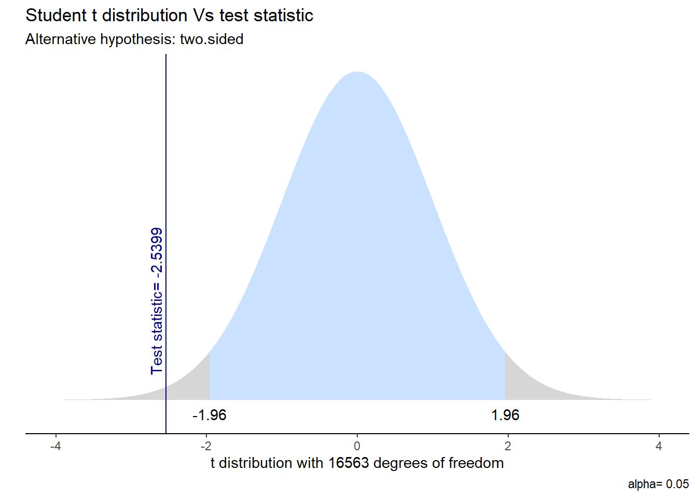

Min. 1st Qu. Median Mean 3rd Qu. Max.
12.0 27.0 43.0 43.7 59.0 100.0
[1] 19.38195
BS1
Totalmente insatisfecho Insatisfecho
158 672
Ni insatisfsfecho/a, ni satisfecho/a Satisfecho
2278 8556
Totalmente satisfecho
4901
VS1_TOTAL
Min. 1st Qu. Median Mean 3rd Qu. Max.
0.03333 3.00000 5.00000 6.25062 8.00000 192.00000
[1] 5.360587
##Análisis Bivariado
Promedio de horas dedicadas a estar con amigos y familia según sexo
sexo
Obs.
Promedio
SD
Hombre
7160
6.129402
4.917874
Mujer
9405
6.342910
5.673037
Promedio de horas dedicadas a estar con amigos y familia según tramo de edad
edad_dummy_label
Obs.
Promedio
SD
0
3380
6.579374
5.074458
1
13185
6.166348
5.428490
Gráfico satisfacción con la vida y según sexo
Gráfico bs1 y vs1
##Hipótesis de diferencias
Two Sample t-test
data: vs1_total by sexo
t = -2.5399, df = 16563, p-value = 0.0111
alternative hypothesis: true difference in means between group Hombre and group Mujer is not equal to 0
95 percent confidence interval:
-0.37827894 -0.04873712
sample estimates:
mean in group Hombre mean in group Mujer
6.129402 6.342910
Method
Alternative
Mean 1
Mean 2
M1 - M2
t
df
p
95% CI
Two Sample t-test
two.sided
6.13
6.34
-0.21
-2.54
16,563
.011*
[-0.38, -0.05]
Gráfico prueba t

##Hipótesis direccional
Welch Two Sample t-test
data: vs1_total by edad_dummy
t = 4.1609, df = 5530.4, p-value = 0.00001609
alternative hypothesis: true difference in means between group 0 and group 1 is greater than 0
95 percent confidence interval:
0.2497232 Inf
sample estimates:
mean in group 0 mean in group 1
6.579374 6.166348
Method
Alternative
Mean 1
Mean 2
M1 - M2
t
df
p
95% CI
Welch Two Sample t-test
greater
6.58
6.17
0.41
4.16
5,530.42
< .001***
[0.25, Inf]
Gráfico prueba t
##Hipótesis correlacional
Ejecutar el código
---title: "Análisis"---```{r cargar-librerias-y-bbdd}#| warning: false#| echo: false#| message: false#cargar libreríaspacman::p_load(tidyverse, # Manipulacion datos ggplot2, # Gráficos sjPlot, # Tablas y gráficos dplyr, kable, kableExtra, haven, tidyr, knitr, summarytools, crosstable, gginference, # Visualizacion rempsyc, # Reporte broom, # Varios flextable, # nice table rempsyc, table1) options(scipen = 999) # para desactivar notacion cientificarm(list = ls()) # para limpiar el entorno de trabajo``````{r Cargar-y-procesar-bbdd}#| warning: false#| echo: false#| message: false#Cargar bbdddatos <- readRDS("Input/enut-bdd-r-v2.RDS")#Procesar bbdddatos <- datos %>% select(sexo, bs1,vs1_p_ds, vs1_t_ds, vs1_p_fds, vs1_t_fds, edad)#Tratamiento NA--------------------------------datos <- na.omit(datos)``````{r Recodificación-de-variables}#| warning: false#| echo: false#| message: false#Crear nueva variable VS1_total para tiempo total con amigos y familia en una semanadatos <- datos %>% mutate(vs1_total = rowSums(across(c(vs1_t_ds, vs1_t_fds)), na.rm = TRUE))#Crear nueva variable edad_dummy, para menores y mayores de 25 añosdatos <- datos %>% mutate(edad_dummy = case_when( edad < 25 ~ 0, edad >= 25 ~ 1, TRUE ~ NA_real_ ))#Pasar variables a factor o numérico según correspondadatos$sexo <- as.factor(datos$sexo)datos$bs1 <- as.factor(datos$bs1)datos$vs1_total <- as.numeric(datos$vs1_total)datos$edad <- as.numeric(datos$edad)#Recodificar sexodatos$sexo <- haven::zap_labels(datos$sexo) datos$sexo <- factor( datos$sexo, levels = c(1, 2), labels = c("Hombre", "Mujer"))#Recodificar bs1datos$bs1 <- haven::zap_labels(datos$bs1)datos$bs1[datos$bs1 == 96] <- NA # quitar “No sabe / NR”datos$bs1 <- factor( datos$bs1, levels = c(1, 2, 3, 4, 5), labels = c("Totalmente insatisfecho", "Insatisfecho", "Ni insatisfsfecho/a, ni satisfecho/a", "Satisfecho", "Totalmente satisfecho"))```##Análisis Descriptivo**SEXO**```{r descriptivos-sexo}#| warning: false#| echo: false#| message: falsesummary(datos$sexo)```**EDAD**```{r Descriptivos-Edad}#| warning: false#| echo: false#| message: falsesummary (datos$edad)sd (datos$edad)```**BS1**```{r Descriptivos-BS1}#| warning: false#| echo: false#| message: falsesummary(datos$bs1)```**VS1_TOTAL**```{r Descriptivos- VS1_TOTAL}#| warning: false#| echo: false#| message: falsesummary(datos$vs1_total)sd(datos$vs1_total)```##Análisis Bivariado**Promedio de horas dedicadas a estar con amigos y familia según sexo**```{r}#| warning: false#| echo: false#| message: falsetab2 <- datos%>%# se especifica la base de datos dplyr::group_by(sexo=sjlabelled::as_label(sexo)) %>%# se agrupan por la variable categórica y se usan sus etiquetas con as_label dplyr::summarise(Obs.=n(),Promedio=mean(vs1_total, na.rm=TRUE),SD=sd(vs1_total, na.rm=TRUE)) %>%# se agregan las operaciones a presentar en la tablakable(, format ="markdown")tab2```**Promedio de horas dedicadas a estar con amigos y familia según tramo de edad**```{r}#| warning: false#| echo: false#| message: falsetab3 <- datos %>%group_by(edad_dummy_label = sjlabelled::as_label(edad_dummy)) %>%summarise(Obs. =n(),Promedio =mean(vs1_total, na.rm =TRUE),SD =sd(vs1_total, na.rm =TRUE) ) %>%kable(format ="markdown")tab3```**Gráfico satisfacción con la vida y según sexo**```{r}#| warning: false#| message: false#| echo: falseggplot(datos, aes(x = bs1, fill = sexo)) +geom_bar(position ="dodge") +labs(title ="Satisfacción con la vida (BS1) según sexo",x ="Nivel de satisfacción",y ="Frecuencia",fill ="Sexo" ) +theme_minimal() +theme(axis.text.x =element_text(angle =45, hjust =1))```**Gráfico bs1 y vs1**```{r grafico-ejemplo}```##Hipótesis de diferencias```{r}#| warning: false#| message: false#| echo: false#Prueba tt_test <-t.test(vs1_total ~ sexo, data = datos, var.equal=TRUE)t_test``````{r}#| warning: false#| message: false#| echo: falsestats.table <-tidy(t_test, conf_int = T)nice_table(stats.table, broom ="t.test")```**Gráfico prueba t**```{r}#| warning: false#| message: false#| echo: falsegginference::ggttest(t_test)```##Hipótesis direccional```{r}#| warning: false#| message: false#| echo: false#Prueba tt_test_2 <-t.test(vs1_total ~ edad_dummy, data = datos, alternative ="greater",conf.level =0.95)t_test_2``````{r}#| warning: false#| message: false#| echo: falsestats.table_2 <-tidy(t_test_2, conf_int = T)nice_table(stats.table_2, broom ="t.test")```**Gráfico prueba t**```{r}#| warning: false#| message: false#| echo: false```##Hipótesis correlacional```{r}```